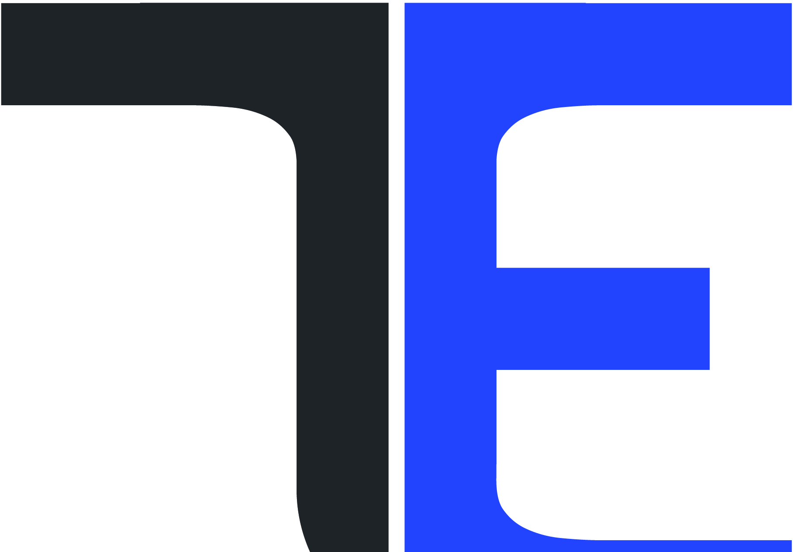
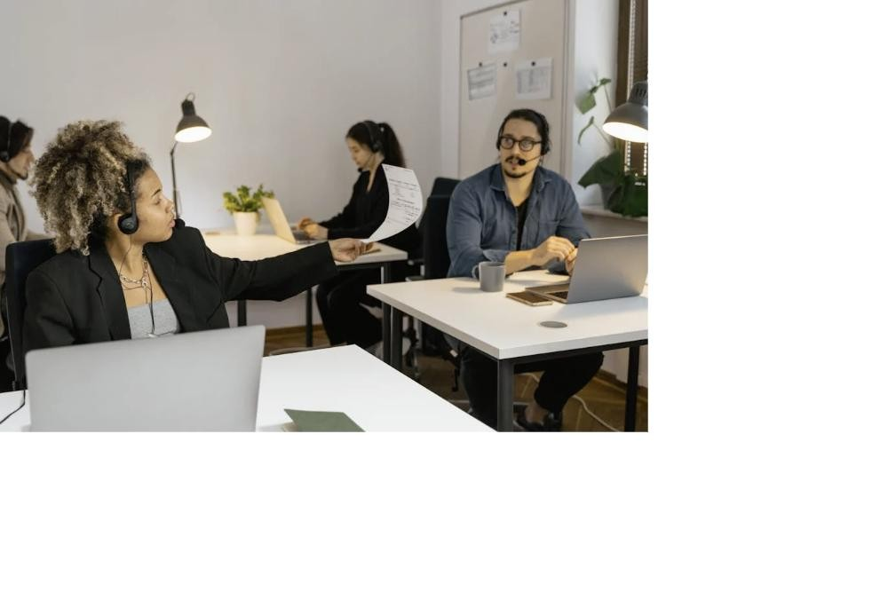
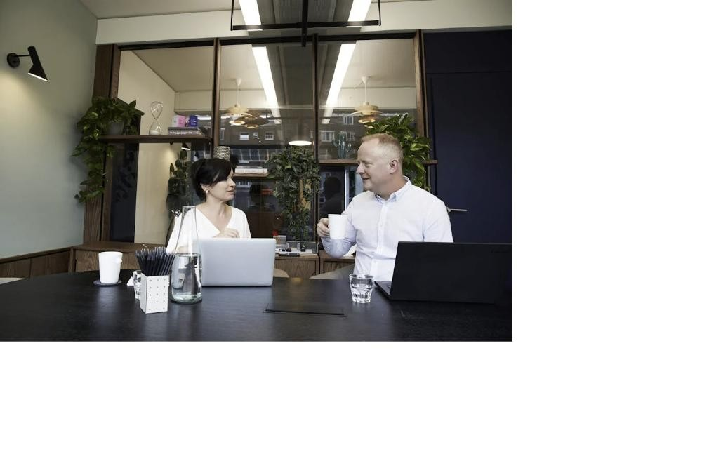

<meta charset="UTF-8">
<meta name="viewport" content="width=device-width, initial-scale=1">
<title>Projects &amp; Our Work | Techembrace</title>
<meta name="description" content="Concrete, compelling evidence of Techembrace's diverse expertise — four portfolio deep-dives covering AI strategy, immersive learning, curriculum design, creative production, and digital transformation.">
<link rel="icon" href="assets/images/favicon-32.png" sizes="32x32" type="image/png">
<link rel="icon" href="assets/images/favicon-512.png" sizes="512x512" type="image/png">
<link rel="apple-touch-icon" href="assets/images/favicon-180.png">
<link rel="preconnect" href="https://fonts.googleapis.com">
<link href="https://fonts.googleapis.com/css2?family=Inter:wght@400;500;600;700;800&display=swap" rel="stylesheet">
<link rel="stylesheet" href="assets/css/styles.css">

<header class="site-header">
  <div class="container">
    <a href="/" class="logo"> Techembrace</a>
    <nav class="main-nav">
      <ul>
        <li><a href="/">Home</a></li>
        <li><a href="about">About</a></li>
        <li><a href="our-services">Services</a></li>
        <li><a href="projects">Projects</a></li>
        <li><a href="ai-ethics-safety">AI Ethics</a></li>
        <li><a href="contact-us">Contact us</a></li>
      </ul>
    </nav>
    <div class="header-cta">
      <a href="contact-us" class="btn btn-primary">Get started</a>
      <button class="nav-toggle" aria-label="Toggle menu">☰</button>
    </div>
  </div>
</header>

<main>
  <section class="page-hero">
    <div class="container">
      <h1>Proof, Not Promises.</h1>
      <p class="lead" style="max-width:62ch; margin-top:10px;">Four portfolio deep-dives, each mapped to the service pillars behind it — concrete, compelling evidence across Strategy, Immersive Learning, Curriculum Design, AI Creative, and Digital Transformation.</p>
      <div class="breadcrumb"><a href="/">Home</a> <span>/</span> <span class="current">Projects</span></div>
    </div>
  </section>

  <section>
    <div class="container">
      <div class="filter-row" data-filter-row>
        <button class="filter-btn is-active" data-filter="all">All</button>
        <button class="filter-btn" data-filter="strategy">Strategy</button>
        <button class="filter-btn" data-filter="vr-ar">VR/AR &amp; Heritage</button>
        <button class="filter-btn" data-filter="ai-creative">AI Creative</button>
        <button class="filter-btn" data-filter="training">Training &amp; Curriculum</button>
      </div>

      <div class="portfolio-grid" data-project-grid>
        <a href="portfolio-teamchefs" class="project-card" data-tags="strategy training ai-creative" style="display:block; color:inherit; text-decoration:none;">
          
          <div class="body">
            <div class="tags"><span>Pillar 01</span><span>Pillar 02</span><span>Pillar 06</span></div>
            <h3>The AI-Powered Culinary Feedback Loop</h3>
            <p>Instant, Michelin-level AI feedback on plating and technique — 70% less instructor time, 30% more Outstanding grades.</p>
          </div>
        </a>
        <a href="portfolio-ai-governance-audit" class="project-card" data-tags="strategy training" style="display:block; color:inherit; text-decoration:none;">
          
          <div class="body">
            <div class="tags"><span>Pillar 01</span><span>Pillar 05</span></div>
            <h3>Regulated AI Governance &amp; Risk Audit</h3>
            <p>A missed clause nearly cost multi-million-pound indemnity exposure. We built the Vault, ran the audit, and restored 100% SRA compliance — for a boutique UK law firm (anonymised).</p>
          </div>
        </a>
        <a href="portfolio-poetry-in-motion" class="project-card" data-tags="vr-ar training ai-creative" style="display:block; color:inherit; text-decoration:none;">
          
          <div class="body">
            <div class="tags"><span>Pillar 02</span><span>Pillar 03</span><span>Pillar 06</span></div>
            <h3>Multimodal Poetry in Motion</h3>
            <p>Turning the Montserrat volcanic crisis and original student poetry into a multimodal digital book — narration, AI imagery, and video, built neuro-inclusive from the ground up.</p>
          </div>
        </a>
        <a href="portfolio-aamac-readiness-audit" class="project-card" data-tags="strategy ai-creative" style="display:block; color:inherit; text-decoration:none;">
          
          <div class="body">
            <div class="tags"><span>Pillar 04</span><span>Pillar 05</span><span>Pillar 06</span></div>
            <h3>The 4-Layer Digital &amp; AI-Search Readiness Audit</h3>
            <p>A 4-layer audit repositioned a legacy Apple service provider for the AI-search era — now serving an 8,500-member training community.</p>
          </div>
        </a>
      </div>
    </div>
  </section>

  <section class="bg-soft">
    <div class="container">
      <div class="section-head">
        <span class="eyebrow">Further Proof Points</span>
        <h2>More of our work, across further sectors.</h2>
      </div>
      <div class="proof-grid">
        <div class="proof-card">
          <h4>Apple Support UK</h4>
          <p>We manage an enterprise-scale Facebook community of 7,000+ members, reviewing complex technical issues and using AI and deep Apple expertise to provide daily solutions — a model for Staff Enablement and ecosystem management.</p>
        </div>
        <div class="proof-card">
          <h4>AI/Human Radio Station — Aityro.fm</h4>
          <p>Building a novel "Creator Partnership Program" business model from within an existing platform — proof of our Ecosystem Partner capability.</p>
        </div>
        <div class="proof-card">
          <h4>Dr Kevin Isaac — Poetry Marketing</h4>
          <p>Blending technical AI execution with creative strategy to solve a niche marketing challenge for an independent author.</p>
        </div>
        <div class="proof-card">
          <h4>Book Creator</h4>
          <p>As ambassadors, we give feedback that shapes the future of the platform and train the wider educator community using it.</p>
        </div>
        <div class="proof-card">
          <h4>Apple Regional Training Centre</h4>
          <p>Validating our high-level Strategic Partnership and Staff Enablement capabilities within one of the world's most demanding technology ecosystems.</p>
        </div>
      </div>
    </div>
  </section>

  <section>
    <div class="cta-banner">
      <h2>Want proof specific to your sector?</h2>
      <p style="color:rgba(255,255,255,.75); max-width:56ch; margin:0 auto 20px;">Tell us your challenge and we'll show you the closest parallel from our body of work.</p>
      <a href="contact-us" class="btn btn-primary">Book a Discovery Call</a>
    </div>
  </section>
</main>

<section class="newsletter">
  <div class="container newsletter-grid">
    <div>
      <h3 style="color:#fff;">🔔 Newsletter</h3>
      <p style="color:rgba(255,255,255,.65); margin:0;">Keep up with our latest updates — subscribe to our newsletter!</p>
    </div>
    <form data-form>
      <input type="text" placeholder="First Name *" required>
      <input type="email" placeholder="Email Address *" required>
      <button type="submit" class="btn btn-primary">Subscribe</button>
    </form>
  </div>
</section>

<footer class="site-footer">
  <div class="container">
    <div class="footer-grid">
      <div>
        <span class="footer-logo"> Techembrace</span>
        <p>Human intelligence, amplified by AI. Strategic learning transformation for organisations who want proof, not promises.</p>
      </div>
      <div>
        <h4>Site</h4>
        <ul>
          <li><a href="/">Home</a></li>
          <li><a href="about">About</a></li>
          <li><a href="our-services">Services</a></li>
          <li><a href="projects">Projects</a></li>
          <li><a href="ai-ethics-safety">AI Ethics & Safety</a></li>
          <li><a href="contact-us">Contact</a></li>
          <li><a href="privacy-policy">Privacy Policy</a></li>
        </ul>
      </div>
      <div>
        <h4>Social Media</h4>
        <ul>
          <li><a href="https://x.com/Techembrace" target="_blank" rel="noopener">X</a></li>
          <li><a href="https://www.facebook.com/TechembraceUK/" target="_blank" rel="noopener">Facebook</a></li>
          <li><a href="https://www.instagram.com/techembrace/" target="_blank" rel="noopener">Instagram</a></li>
          <li><a href="https://www.linkedin.com/company/5235283/" target="_blank" rel="noopener">LinkedIn</a></li>
        </ul>
      </div>
    </div>
    <div class="footer-bottom">
      <span>© All rights reserved 2026</span>
      <span>Made with 💙 by Techembrace.com</span>
    </div>
  </div>
</footer>

<script src="assets/js/main.js"></script>
